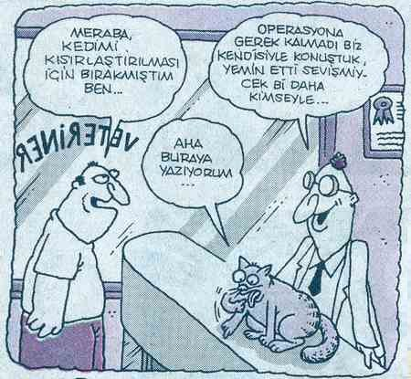

uMtMu

Table of Contents
- 1 Yazılar
- 1.1 Bu 10 şeyi kendinize yapmayın
- 1.2 Ölü
- 1.3 Alçı
- 1.4 Sezen abılam demiş
- 1.5 Pişmanlık
- 1.6 Güzel günler gelmeyebilir ama en azından bir an gelebilir.
- 1.7 Endişeli misin?
- 1.8 Mutlu son
- 1.9 Babalık
- 1.10 Protokol farkı
- 1.11 Martılara veda
- 1.12 Can
- 1.13 İnsanlar ve söyledikleri
- 1.14 Jenga
- 1.15 Sakinleştiremediklerimizden misiniz?
- 1.16 Üstü Kalsın
- 1.17 Olaylar - İnsanlar - Motivasyonlar
- 1.18 Odak Noktası - Onay Noktası
- 1.19 Psikiyatrist
- 1.20 Harcayamadığın bir paran, kullanamadığın bir zekan olması kadar acı verici bir şey yok
- 1.21 İnsanın doğası
- 1.22 Acımız
- 1.23 Hayat, bir türlü iyileşmeyen inatçı bir hastalık gibi, ölüm dışında bir çaresi yok.
- 1.24 Sanırım bu halde fazla uzağa gidemeyeceğim
- 1.25 Ben hep, Ben hiç
- 1.26 Fuck you!
- 1.27 Kahve dolabındaki gizli dünya
- 1.28 Düşünemedi
- 1.29 Bugün vapur çok kalabalıktı…
- 1.30 Basit düşünmek
- 1.31 Bazen bilgisayardaki ok ile bileğimi kesesim geliyor
- 1.32 Bu yol nereye gider?
- 1.33 Ebruli
- 1.34 Metod
- 1.35 Tavsiyeler
- 1.36 En kısa rüyam
- 1.37 Bazen pencereden atlayıp uçup gidesim geliyor
- 1.38 Bazen kendimden nefret ediyorum.
- 1.39 Beyin uyuşması
- 1.40 İsteksizlik -> Gereklilik -> Kararsızlık -> Geçici Felç!
- 1.41 Sığır seçmene, Seçme Sığır
- 1.42 Hayat akıp gidiyor
- 1.43 Bilmezlik
- 1.44 Saygı, Saygısızlık, Saygılılık [Doldurulacak]
- 1.45 Öküz evlatları
- 1.46 Ne yaptığım hakkında bir fikrim yok
- 1.47 Where is my mind?
- 1.48 Her şeyden tırsar oldum
- 1.49 İnsanlığın son bulacağı nokta
- 1.50 Kadın ve Erkek
- 1.51 İstiyorum - 2
- 1.52 Jump To Hyperspace
- 1.53 İstiyorum - 1
- 1.54 Düşünceler
- 1.55 Ne yapsam bilmiyorum?
- 1.56 Yalnızlığın yüzleri
- 1.57 Oh ne ala memleket?
- 1.58 Ben niye buradayım?
- 2 Bağlantılar
1 Yazılar
1.1 Bu 10 şeyi kendinize yapmayın
- Asla ama asla kendinizi suçlamayın.
Her şey yaşanması gerektiği için yaşandı.
!! Bu başlık için söyleyeceklerim var.
- Kendinize karşı dürüst olun.
Unutmayın, kandıramayacağınız tek kişi kendinizsiniz.
!! Bu başlık için de söyleyeceklerim var.
- Kendinizi olduğunuzdan aşağı görmeyin.
- Geçmişte yaşamayı bırakın.
- İhtiyaçlarınızı görmezden gelmeyin.
- Yapacağınız şeyleri çok fazla düşünmeyin. Yapın gitsin.
- Fırsatlardan korkmayın.
- Başkaları için yaşamayı bırakın.
Aşırı fedakar olmayın. Patlayınca feci olur.
- Sevmediğiniz şeyleri yapmayın.
- Hayallerinizi ertelemeyin.
1.2 Ölü
Zaten ölü olan bir şeyi tekrar öldüremezsin.
1.3 Alçı
Umarsızca sağa sola bakıp omuz silkti. Kayda değer bir değişiklik yoktu. On
yıl önce başına gelenlerden sonra gözleri dışında her hangi bir uzvunu kendi
iradesi dahilinde hareket ettirme yeteneğini kaybetmişti. Doktor, kısaca
"Artık iflah olmaz" anlamına gelen uzun bir şeyler söylemişti. Aslında onu da
pek hatırlamıyordu.
Bir an her şeyi unutmuş paniklemişti. Lan kollar kıpırdamıyor. Tabi çok kısa
bir an sürmüştü. Ne kadar alışırsa alışsın ara ara gözündeki gözlüğü arar
gibi duruma yabancılaşabiliyordu.
Karşısındaki beyaz duvarda sıva izlerinin arasında yeni bir şekil
gördü. Uzun zamandır nasıl gözünden kaçtığına şaşırdı. Basbaya çıplak bir
kadın resmiydi. Otuzlarının sonunda. Büyük gögüslü, uzun saçlı bir
kadın. Belki de rasgele anlarda yaşadığı ereksiyonun sebebi, şimdiye kadar
farkında olmadığı bu görüntüydü.
Sakalını oynadığını hayal etti. Esnediğini hayal edip, bir daha uyanmamayı
umut ederek uyudu.
Ne yazık ki uyandı.
1.4 Sezen abılam demiş
Dert bitmeyince, bildiğin çektiğine yetmeyince
Düşmanında kendini yakalayınca, bi daha kin gütmeyince
1.5 Pişmanlık
Ölümün pişmanlığı, şu ne yaşıyorum yerine şu an ne yaşayabilirdim
düşüncesidir.
1.6 Güzel günler gelmeyebilir ama en azından bir an gelebilir.
1.7 Endişeli misin?
1.8 Mutlu son
Dünyada bu kadar hayal kırıklığı olmasaydı kimse filmlerde mutlu son beklemezdi.
1.9 Babalık
İki çocuğu olan bir baba gibiyiz. Bir elimizle hisleri bir elimizle
gerçekleri tutarız. Birinin elini bırakırsak çocuk büyüyünce götümüzden kan
alır
1.10 Protokol farkı
Ben TCP kullanıyordum o ise UDP.
1.11 Martılara veda
Elveda martılar.
Aranızdan gitme vaktim geldi.
Yıllarca size öykündüm aşağıdan.
Kendimi sizden birisi gibi hissetmek için,
Elimden geleni yaptım.
Arkadaşlarım da size benzetmedi değil.
Ben martı olamadım.
Kollarınızı açıp beni beklediniz ama
Ben size yaklaşamadım.
Martılar,
bembeyaz arkadaşlarım.
Ekmeğiniz bol, rüzgarınız daim olsun.
Elveda…
1.12 Can
Gözlerinin yuvalarından dışarı bakıyorum. Ne kadar çıkıp gitmek istesem de
gidersem ikimizin de yok olacağını biliyorum. Belki etkimiz kalacak. Ama biz
olmayacağız. Ne sen sen olacaksın ne de ben ben.
1.13 İnsanlar ve söyledikleri
İnsanların söylediklerini daha iyi anlamaya başladığımı düşünüyorum. Bu
kendi kendine düşünüp kurmak değil. Çevremdeki insanlar iyi insanlar ve
benim de iyiliğimi düşünüyorlar. Söylenenlere düz bakmak yerine altındaki
duyguyu ve alternatif düşünceleri daha iyi anlamaya çalışacağım. Onlar kendi
yöntemleri ile bana duygusal ve mantıksal olarak yardım etmeye çalışıyorlar.
1.14 Jenga
Hayatımız Jenga oyunu gibi. Çocukken dizilişe bağlı olarak görece sağlam
oluyoruz. Sonra yükselmek veya ilerlemek için bir şeylerin yerini
değiştirmeye başlıyoruz. Farklı bir şeye dönüşüyoruz. Hamlelerimize bağlı
olarak denge değerimiz değişiyor. Ortaya koyduğumuz ben değişiyor.
1.15 Sakinleştiremediklerimizden misiniz?
1.16 Üstü Kalsın
Ölüyorum tanrım
Bu da oldu işte.
Her ölüm erken ölümdür
Biliyorum tanrım.
Ama, ayrıca, aldığın şu hayat
Fena değildir…
Üstü kalsın…
Cemal SÜREYA
1.17 Olaylar - İnsanlar - Motivasyonlar
1.18 Odak Noktası - Onay Noktası
1.19 Psikiyatrist
Psikiyatriste gider ve intihar etmek istediğinizi söylersiniz. Sizden
intihar etmeyeceğinize dair söz vermenizi ister. Hah amına koyayım, söz
verince oldu.

Yukarı
1.20 Harcayamadığın bir paran, kullanamadığın bir zekan olması kadar acı verici bir şey yok
1.21 İnsanın doğası
İnsanın doğası anarşizm olmalı. En azından insandan bir miktar önceki
evrenin. Koyulmamış kuralların olduğu bir dünya. Kanunlar, güçlüyü
çoğunluğa, bireyi de güçlüye karşı korur. Saygıdan, cinsel ahlaktan vb bahsederken
insanın aklına hep normlar geliyor. Saygısızlığı, cinsel ahlaksızlığı ne
belirliyor? Biri ya da birilerinin oluşturduğu normlar. Birisine saygısız
derken sizin saygı anlayışını paylaşıyor ve en azından kınıyorsunuz.
Bazı şeylere kural denir, bazı şeyler adları kural olmasa da kuraldır.
Yukarı
1.22 Acımız
Asla acının hiç gelmeyecek bir yabancı ya da hiç gitmeyecek bir akraba
olduğunu düşünmemeliyiz. Acımız öz kardeşimiz gibi bizden, şimdi burada
değilse bile gelecek, gelmişse bir gün elbet gidecek
Yukarı
1.23 Hayat, bir türlü iyileşmeyen inatçı bir hastalık gibi, ölüm dışında bir çaresi yok.
Ne kadar mutlu olsak da hayat bitmek zorunda. Açlıktan ya da kurşun
yarasıyla, yatakta ya da ayakta, zihinlerde acının bitmesi için hayat
bitmeli.
Yukarı
1.24 Sanırım bu halde fazla uzağa gidemeyeceğim
1.25 Ben hep, Ben hiç
1.26 Fuck you!
1.27 Kahve dolabındaki gizli dünya
- Kahve dolabı, gizli bir dünyanın kapısı. Içerde çeşit çeşit karakter
var. Renkli bitki çayları tarz abidesi. Diğerlerini yok sayıyor. Sürekli
birlikte takılıyor. Çıt kırıldımlar. Kağıttan giysileri. Nescafe ve kahve
kreması ise mahallenin havalı delikanlısı ve onun yancısı gibi. Onlar da
hep birlikte. Sert görünüşlüler. Ağır ve mağrur. Siyah çay ise milyonları
anlatır gibi. Birbirinin aynı. Çıt kırıldım ama birlikte bir ağırlıkları
var. Belki meyva çayları gibi renkli değiller ama netler.
- Bazen kahve dolabının içine giresim geliyor. Yeni bir dünyaya açılır
gibi. Bağları koparmış. Özgür gibi. Muhtelemen bir içecek olmadığım için
beni pek sallamazlar ama ben ortalığı karıştırabilirim. Her şirket çalışanı
bunu düşünmüş müdür acaba? Kahve dolabının kapağını, Alice Harikalar
Diyarındaki tavşan deliği olarak hayal etmiş midir? Yaşamak kitap yazmanın
en iyi yolu mudur?
1.28 Düşünemedi
Kimisi insanlar neden intihar eder diye düşünür. Oysa cevap basittir. Sadece
başka bir çıkış yolu düşünemezler.
Ve her intihar insanı öldürmez…
Yukarı
1.29 Bugün vapur çok kalabalıktı…
Bugün vapur çok kalabalık. Belki de hava iyileşti sanırım. Normalde üst kısım
bu kadar insan, gürültü olmuyordu. Hava yeni yıl öncesi bir güzellik mi
yapıyor acaba. Bunlar hep edebi latifeler. Ne havanın bizi sakladığı var ne
de yeni yılda haberi. Apayrı bir modüldeki sınıfın, diğer bir modüldeki
sınıfın özel verisini bilmesi gibi bir şey bu.
Dün patron güzel bir terim kullandı. Vagon dedi insanların konuşmalarındaki
tuzaklara. Sanırım iş konuşmaları, birini state'ini öğrenmek ve değiştirmeye
çalışmak dışında anlamsız. Zaten başka nasıl bir amacınız olabilir ki. Vagon
da burada da konuşmadaki karşı tarafın state'ini bir durumdan başka bir
duruma geçiren motivasyon ve yönlendirmeler oluyor. Yabancılar motivasyon
yerine leverage diyor sanırım. Hoş motivasyon da yabancı kaynaklı. Bakalım
türkçe karşılığı neymiş. Tdk “güdüleme, isteklendirme” diyor. Bu da bir çeşit
yönlendirme o zaman. Zaten karşıdakini istediğiniz duruma geçmesi için
sebepler veriyorsunuz.
1.30 Basit düşünmek
Basit düşünmek nedir? Hep zihin programlamadan bahsederler. İlk başlarda bu
konuya mesafeyi yaklaşıyordum. Zihninizi programlayın. Hayatınızı yeniden
keşfedin. Uçun, kaçın, zengin olun vs. Bunlar gerçeklerin önündeki maddi
kaygıların oluşturduğu bir sis bulutu.
Basit düşünmek nedir? Hedef 'e odaklı olmak mı? Hedef 'e giderken dikkat
dağıtıcılardan uzak durmak ve dikkatin dağıldığını fark edip geri dönebilmek
mi? Yoksa Hedef 'e ulaşmak için en basit yolları mı seçmek? Sanırım son
söylediğim daha Hedef 'e yakın.
Bir durum üzerinden gidelim. Yazı yazmayı seviyorum. Yazdıklarımı internet
üzerinde barındırmak kalıcılık bakımından iyi oluyor. Peki bunun için ne
kullanıyorum? Emacs, OrgMode, github, githubio. Peki bu yaptığım bunu yapmak
için en basit yöntem mi?
Neden github.io? Çünkü hosting ile uğraşmak istemedim.
Neden emacs? İçerik hazırlamak için zaten neredeyse her gün kullandığım bir
uygulamayı kullanmak fazladan gereksinimleri ortadan kaldırıyor. Sadece o
uygulama konusunda bazı yeni şeyler öğrenmek gerekiyor.
Peki probleme geri dönelim. Yazılarımı ücret olmadan ve yenilemek ile
uğraşmadan basit bir şekilde yayınlamak. Daha basit nasıl yapılabilirdi.
Bedava hosting araştırıp içeriği notepad gibi bir metin editöründe html ile
hazırlayabilirdim.
Bu olasılığın karşıma çıkartacağı sorunlar;
- Hosting firması, kayıt yenileme, epostalar ile uğraşmam gerekirdi.
- HTML içeriğini emacs orgmode ile yaptığım kadar rahat yapamazdım.
O zaman probleme basit ve işe yarar bir çözüm oluşturmuş oldum mu?
1.31 Bazen bilgisayardaki ok ile bileğimi kesesim geliyor
1.32 Bu yol nereye gider?
Yolumun götürdüğü yerden başka bir yere mi gitmek istiyorum?
Yukarı
1.33 Ebruli
Hayat bu işte, bir şarkı dinlemek için kırk takla atmak. Hayatın hiç bir
yere varmadığı düşüncesi. Anca yazmak. Kimseye faydası olmayan
yazılar. İnsana boşa kürek çektiğini hissettiriyor. Hiç ulaşılamayacak
güçlerin peşinden koşan küçük çocuklar gibi yaşamak. Hayat, hayallerimizdeki
gibi değil. Hayat gördüğümüz gibi bile değil. Hayat can çekişen bir
kumru. Kediler üstüne üşüşmüş.
Yukarı
1.34 Metod
- Tanımla
- Ayıkla
- Hatırla
- Kurgula
- Uygula
1.35 Tavsiyeler
- İhtiyacın yoksa
ARAMA,
TIKLAMA,
SAKLAMA,
DİKKATİNİ HARCAMA!!
- AZ YAZ, ÇOK DÜŞÜN.
1.36 En kısa rüyam
"Hayır, imkansız" dedim ve uyandım…
Yukarı
1.37 Bazen pencereden atlayıp uçup gidesim geliyor

{kind=link}
1.38 Bazen kendimden nefret ediyorum.
Bazen kendimden nefret ediyorum. Başka insanların yaptıklarını, tanıdığım
insanların ne yaptıklarını görüyorum ve kendime kızıyorum nefret ediyorum.
Fuck you!!
1.39 Beyin uyuşması
Ne yapacağımı bilmiyorum. Olduğum halden çıkmak için ne yapmak gerekir
bilmiyorum. Belki de bir süre böyle durmalıyım ama iş yerinden böyle durmak
tehlikeli olabilir.
Yukarı
1.40 İsteksizlik -> Gereklilik -> Kararsızlık -> Geçici Felç!
1.41 Sığır seçmene, Seçme Sığır
Başımıza yönetici, karar verici olarak öyle ahlaksız, karaktersiz
vb. insanları seçmiş olduğumuzu görmek. Siyasetin varlığı, adeta ahlaksızlığın,
karaktersizliğin taçlandırılması. Böyle bir dünyada nasıl yaşayabiliyoruz?
1.42 Hayat akıp gidiyor
Hayat akıp gidiyor. Her an içimizde bir sürü ölüm ve doğum
oluyor. Çevremizdeki büyük ölümler bizi çok üzüyor ama içimizdeki ölümlere
karşı daha umursamaz davranıyoruz. Kimi farkında değil, kimi farkında ama
umursamıyor. Hücreler ölüyor, duygular ölüyor, düşünceler ölüyor.
Yukarı
1.43 Bilmezlik

Bir bilmezlik hali içindeyim. Şu anda nasıl bir konumda olduğumu
bilmiyorum.
Aslında bir çok insan bilmezlik halinde. Kendimizi ne kadar
biliyoruz. Belki de kullandığım bilgisayarı, kendimi bildiğimden daha iyi
biliyorum. İnsanın ucunu bucağını bilmek mümkün mü?
Sınırlı varlıklar olduğumuzu düşünüyorum. Aslına bakarsanız çoğu şey
sınırlı. Sadece gezip göremediğimiz yerleri var insanın. Orada insan
kalmayana kadar yürüyemedik belki de. İnsandan aşağı ya da yukarı
bakamadık. İnsanın ötesinde ne var? Insan sürekli genişleyen bir varlık mı?
Yoksa sadece yeni şeyler öğrendiğimiz için genişlediğimizi mi
düşünüyoruz. Belki de insan, içinde sonsuza değin dönüp duracağın bir
labirent…
Yukarı
1.44 Saygı, Saygısızlık, Saygılılık [Doldurulacak]
1.45 Öküz evlatları

Evrim teorisine inanıyorum ama insanın atasının maymun olduğunu
düşünmüyorum. Bence insan doğrudan öküzden evrilmiş. Bazı insanlar evrim
geçirip maymuna evriliyor.
1.46 Ne yaptığım hakkında bir fikrim yok
Cidden 3 haftadır ne yaptığım konusunda neredeyse hiç bir fikrim yok. Sanırım
beynim "Yeter amk!" sinyalleri veriyor. İşin kötüsü ne yapmam gerekiyor onu
da bilmiyorum. Bir süredir, hiç bir şey yapmamayı deniyorum. Lakin bunda da
pek başarılı olduğum söylenemez. Kurtarıcı olarak gördüğüm ve dört gözle
beklediğim hafta sonları yardımcı olmuyor. Ne yapacağımı
bilmiyorum. Bilgisayarım nerede kaldı?
{kind=link}
1.48 Her şeyden tırsar oldum
O kadar düşünemiyorum ki her şeyden tırsar oldum. Acaba her şey ayrı mı
yazılıyordu?
1.49 İnsanlığın son bulacağı nokta
Bence insanlığın son bulacağı nokta, dikkatini tamamen faydasız olan şeylere
odakladığı noktadır. O anda insanlık fiilen olmasa da zihnen yok olacaktır.
1.50 Kadın ve Erkek
Karısını döve döve öldüren adam, 13 ay ceza alıp yattığı süre göz önünde
bulundurularak serbest bırakılmış. Tecavüzcüsünü öldüren kadına müebbet hapis
cezası verilmiş.
Burada iki nokta var.
- Kadın ve Erkek konusunda eşitsizlik
- Elde edilen bilgiye olan güvensizlik
1.51 İstiyorum - 2
Yazar olmak istiyorum. Köşe yazıları, kitaplar yazmak istiyorum. Ama ortalıkta
olmak istemiyorum. Yüzüm görünsün istemiyorum.
1.52 Jump To Hyperspace
Sanırım böyle bir atlayışa ihtiyacım var. Kafamdaki sorunları çözemiyorum.
1.53 İstiyorum - 1
Programlama dilleri ile ilgilenmek, farklı paradigmaları araştırmak kullanmak
istiyorum.
Avcılar ve atıcılar derneğine Atıcı olarak kayıt olmak, ara sıra atıcılık
yapmak istiyorum.
1.54 Düşünceler
Bu sabah işe 1030 gitmem gerekirken 0830 da gitti. Bunu iskelede fark
ettim. Bari güzel bir kahvaltı yapayım dedim. Kahvaltımı alıp kasaya yakın bir
masaya oturdum. Tabi bilinçli olarak değil. Sadece dışarıda yer olmadığı
için. ıçeri giren iki kişi dikkatimi çekti. Giyimleri ve duruşları diğerlerine
göre farklıydı. ılk düşüncem giyimlerinden dolayı kasıntı olduklarını
düşünmemdi. Asıl ilgimi çeken adamlardan birisinin nasıl sipariş verdiği
idi. "2 boyoz istiyorum" dedi. Diğerleri nasıl sipariş veriyor diye
dinledim. Neredeyse herkes "2 boyoz alayım" dedi. Sonra dükkana geldim. Dün
akşamdan beri düşündüğüm bir konuya programlama dili paradigmalarına tekrar
bakayım dedi. ışte o an ne "istediğimi" ve ne "aldığımı" anladım.
1.55 Ne yapsam bilmiyorum?
Hayatımda ne yapacağımı bilmediğim bir sürü zaman oldu. Şimdi ne yapacağımı
düşünüyorum. Şu anda ne olduğunu da bilmiyorum. Tek bildiğim şey şu gibi bir
şey de söyleyemiyorum.
1.56 Yalnızlığın yüzleri
Bazen yalnız olmanın güzel olduğu zamanlar oluyor. Sizi tutan birisi
olmasındansa yalnızlığın özgürlüğünü hissetmek.
(Cum Haz 12 10:35:17 Türkiye Yaz Saati 2015)
1.57 Oh ne ala memleket?
Sen düşün düşün, sonra eyleme geçen alıp gitsin. Ne ala memleket!!
1.58 Ben niye buradayım?
Adamı olmayacak yere koyarsan o da sana sorar.